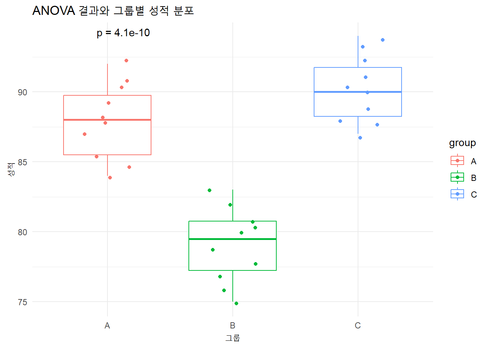

Statistical Inference is the process of drawing conclusions about population parameters based on a sample from the population. There are two main branches of statistical inference:
Estimation: Involves estimating population parameters (e.g., the mean or variance) using sample data.
Hypothesis Testing: Involves testing assumptions (hypotheses) about population parameters.
The objective is to make reliable conclusions about a population, recognizing that sample data inherently contains some uncertainty.
2. Point Estimation
A point estimate provides a single value as an estimate of a population parameter. The most common point estimators are:
Sample Mean (\(\hat{\mu}\)): An estimate of the population mean (\(\mu\)).
Sample Variance (\(\hat{\sigma}\)): An estimate of the population variance (\(\sigma^2\)).
Unbiasedness: The expected value of the estimator is equal to the parameter it estimates.
Consistency: As the sample size increases, the estimator converges to the true parameter.
Efficiency: Among unbiased estimators, an efficient estimator has the smallest variance.
R Code for Point Estimation:
# Generate random sample dataset.seed(123)data <-rnorm(100, mean =50, sd =10)# Calculate point estimatessample_mean <-mean(data)sample_variance <-var(data)cat("Sample Mean:", sample_mean, "\n")
Sample Mean: 50.90406
cat("Sample Variance:", sample_variance, "\n")
Sample Variance: 83.32328
3. Interval Estimation (Confidence Intervals)
A confidence interval provides a range of values that is likely to contain the population parameter with a specified level of confidence (e.g., 95%).
For the sample mean, a 95% confidence interval can be calculated as:
\[
CI = \hat{\mu} \pm z_{\alpha/2} \cdot \frac{\hat{\sigma}}{\sqrt{n}}
\]
Where:
\(\hat{\mu}\) is the sample mean,
\(z_{\alpha/2}\) is the critical value from the standard normal distribution (1.96 for 95% confidence),
\(\hat{\sigma}\) is the sample standard deviation,
\(n\) is the sample size.
R Code for Confidence Interval:
# Function to calculate a 95% confidence intervalconfidence_interval <-function(data) { n <-length(data) mean <-mean(data) sd <-sd(data) error <-qnorm(0.975) * sd /sqrt(n) lower_bound <- mean - error upper_bound <- mean + errorreturn(c(lower_bound, upper_bound))}# Generate sample dataset.seed(123)data <-rnorm(100, mean =50, sd =10)# Calculate the 95% confidence intervalci <-confidence_interval(data)cat("95% Confidence Interval:", ci, "\n")
95% Confidence Interval: 49.11497 52.69315
4. Hypothesis Testing
Hypothesis Testing involves testing an assumption (hypothesis) about a population parameter. The two types of hypotheses are:
Null Hypothesis (H₀): The statement being tested, usually a statement of no effect or no difference.
Alternative Hypothesis (H₁): The statement you want to test, indicating an effect or difference.
Steps in Hypothesis Testing:
State the null and alternative hypotheses.
Choose a significance level (\(\alpha\), usually 0.05).
Compute a test statistic.
Determine the critical value or p-value.
Make a decision: reject or fail to reject the null hypothesis.
Test Statistic for a Mean:
For large samples (n > 30), we use the z-statistic:
\[
Z = \frac{\hat{\mu} - \mu_0}{\hat{\sigma} / \sqrt{n}}
\]
Where:
\(\hat{\mu}\) is the sample mean,
\(\mu_0\) is the population mean under the null hypothesis,
\(\hat{\sigma}\) is the sample standard deviation.
R Code for Hypothesis Testing (One-Sample t-test):
5. Types of Errors
In hypothesis testing, we can make two types of errors:
Type I Error: Rejecting the null hypothesis when it is true (false positive).
Type II Error: Failing to reject the null hypothesis when it is false (false negative).
The power of a test is the probability of correctly rejecting a false null hypothesis (1 - probability of Type II error).
R Code for Power Calculation:
# Calculate the power of a t-testlibrary(pwr)# Parameters for power calculation: effect size, significance level, sample sizeeffect_size <- (55-50) /10# (difference in means / standard deviation)power_result <-pwr.t.test(d = effect_size, n =100, sig.level =0.05, type ="two.sample")# Output the power of the testprint(power_result)
Two-sample t test power calculation
n = 100
d = 0.5
sig.level = 0.05
power = 0.9404272
alternative = two.sided
NOTE: n is number in *each* group
Frequentist vs. Bayesian
1. Introduction
In statistics, two major schools of thought exist: Frequentist and Bayesian. Each has its own interpretation of probability, methods of inference, and philosophy. Let’s explore the key differences, along with some intuitive examples and R code for both approaches.
2. Historical Background
Frequentist Approach
Origins: The frequentist approach is rooted in the early 20th century, developed by statisticians such as Ronald A. Fisher, Jerzy Neyman, and Egon Pearson.
Philosophy: Frequentists define probability as the long-run frequency of events. They believe that population parameters are fixed but unknown, and they use data from random samples to infer these fixed parameters.
Example: If you flip a coin many times, the frequentist interpretation is that the probability of heads is the long-term proportion of heads after infinite flips.
Bayesian Approach
Origins: Bayesian statistics is named after Rev. Thomas Bayes, an 18th-century mathematician. However, it wasn’t until the 20th century that statisticians like Harold Jeffreys and Leonard J. Savage developed Bayesian ideas more thoroughly.
Philosophy: In Bayesian statistics, probability represents a degree of belief or certainty about an event. Bayesian inference updates this belief as new data becomes available, using Bayes’ Theorem.
Example: If you believe that the coin is biased based on previous information (e.g., 60% heads in past experiments), you incorporate that into your analysis and update your belief as new flips are observed.
3. Philosophical Differences
Frequentist Philosophy
Objective: Population parameters (like the mean or variance) are fixed but unknown, and we use sampling to make inferences about these parameters.
Probability: The probability of an event is the long-run frequency with which the event occurs over repeated experiments.
Hypothesis Testing: Frequentists use p-values to test hypotheses and make decisions without explicitly incorporating prior knowledge.
For example, in hypothesis testing, you might ask: “Given this data, how likely is it to observe this result if the null hypothesis were true?”
Bayesian Philosophy
Subjective: Bayesian statistics treats parameters as random variables with their own distributions, reflecting uncertainty or prior beliefs.
Probability: Probability represents a degree of belief in an event, which is updated as new data is observed.
Bayes’ Theorem: The cornerstone of Bayesian inference, Bayes’ Theorem allows us to update prior beliefs about a parameter in light of new evidence.
For example, you might ask: “Given this data, how should I update my belief about the true parameter?”
4. Bayes’ Theorem
The key formula that defines Bayesian inference is Bayes’ Theorem: \[
P(\theta | X) = \frac{P(X | \theta) P(\theta)}{P(X)}
\] Where:
\(P(\theta | X)\) is the posterior probability of the parameter \(\theta\) given data \(X\),
\(P(X | \theta)\) is the likelihood, the probability of observing the data given \(\theta\),
\(P(\theta)\) is the prior probability, representing our belief about \(\theta\) before seeing the data,
\(P(X)\) is the marginal likelihood, a normalizing constant that ensures the posterior is a valid probability distribution.
Example:
If you’re trying to estimate the probability of getting heads from a potentially biased coin, the Bayesian approach would combine your prior belief (say, you think the coin might be biased towards heads) with the actual results from a series of flips to calculate an updated belief (the posterior).
5. Intuitive Examples
Example 1: Coin Toss (Frequentist vs. Bayesian)
Frequentist Approach:
The frequentist approach to estimating the probability of heads (p) in a coin toss would involve collecting data (number of heads and tails) and estimating p using the sample proportion:
\[
\hat{p} = \frac{\text{number of heads}}{\text{total flips}}
\] Frequentists would not incorporate any prior beliefs and rely solely on the data at hand.
Bayesian Approach:
Bayesians would start with a prior distribution for ppp, reflecting their belief about the probability of heads before observing any data. After flipping the coin several times, they would update this belief using Bayes’ Theorem to obtain the posterior distribution for ppp.
R Code for Coin Toss (Frequentist vs. Bayesian)
# Frequentist Approach - Coin Tossset.seed(123)n <-100# Number of flipsp_true <-0.6# True probability of headsflips <-rbinom(n, size =1, prob = p_true)freq_estimate <-mean(flips)cat("Frequentist Estimate of p:", freq_estimate, "\n")
Frequentist Estimate of p: 0.6
# Bayesian Approach - Coin Toss with Beta Priorlibrary(ggplot2)# Prior: Beta(2, 2) - Reflects prior belief that p is likely around 0.5prior_alpha <-2prior_beta <-2# Posterior: Beta(alpha + heads, beta + tails)heads <-sum(flips)tails <- n - headsposterior_alpha <- prior_alpha + headsposterior_beta <- prior_beta + tails# Visualize the Prior and Posterior Distributionsp_vals <-seq(0, 1, length.out =100)prior_dist <-dbeta(p_vals, prior_alpha, prior_beta)posterior_dist <-dbeta(p_vals, posterior_alpha, posterior_beta)df <-data.frame(p_vals, prior_dist, posterior_dist)ggplot(df, aes(x = p_vals)) +geom_line(aes(y = prior_dist, color ="Prior")) +geom_line(aes(y = posterior_dist, color ="Posterior")) +labs(title ="Prior and Posterior Distributions",x ="Probability of Heads (p)", y ="Density") +scale_color_manual(values =c("Prior"="blue", "Posterior"="red")) +theme_minimal()
6. Example 2: Hypothesis Testing (Frequentist vs. Bayesian)
Frequentist Hypothesis Testing
In frequentist hypothesis testing, we define a null hypothesis H0 (e.g., the population mean is zero) and use a test statistic to determine whether we reject H0 based on a significance level (e.g., \(\alpha = 0.05\)).
Bayesian Hypothesis Testing
In Bayesian hypothesis testing, we compute the posterior probability of the hypotheses and compare them directly. Instead of a p-value, we might calculate the Bayes Factor, which quantifies the evidence in favor of one hypothesis over another.
R Code for Hypothesis Testing (Frequentist vs. Bayesian)
# Frequentist T-testset.seed(123)data <-rnorm(100, mean =5, sd =2)t_test_result <-t.test(data, mu =0)print(t_test_result)
One Sample t-test
data: data
t = 28.378, df = 99, p-value < 2.2e-16
alternative hypothesis: true mean is not equal to 0
95 percent confidence interval:
4.818567 5.543057
sample estimates:
mean of x
5.180812
# Bayesian T-test using BayesFactor package# install.packages("BayesFactor")library(BayesFactor)
Loading required package: coda
Loading required package: Matrix
************
Welcome to BayesFactor 0.9.12-4.7. If you have questions, please contact Richard Morey (richarddmorey@gmail.com).
Type BFManual() to open the manual.
************
# Bayesian testbf <-ttestBF(x = data, mu =0)print(bf)
Frequentist statistics is based on the idea of long-run frequencies, and parameters are treated as fixed. Estimations and hypothesis testing are based purely on observed data without incorporating prior beliefs.
Bayesian statistics incorporates prior knowledge and updates this belief using data. Parameters are treated as random variables with their own probability distributions.
Frequentist tools include p-values and confidence intervals, while Bayesian tools involve posterior distributions and Bayes Factors.
ANOVA (Analysis of Variance)
여러 집단 간의 평균 차이를 분석하기 위한 통계적 기법. 두 개 이상의 집단이 있을 때, 이 집단들의 평균이 동일한지를 검정하는 데 사용됨. ANOVA는 일반적으로 F-검정을 통해 수행되며, 집단 간의 분산과 집단 내의 분산을 비교하여 집단 평균의 차이가 통계적으로 유의미한지를 결정.
ANOVA의 기본 개념
귀무가설 (H0): 모든 집단의 평균이 동일.
\[
H_0: \mu_1 = \mu_2 = \cdots = \mu_k
\]
대립가설 (H1): 적어도 하나의 집단의 평균이 다르다.
ANOVA의 원리
ANOVA는 총 변동을 두 부분으로 나누어 분석.
집단 간 변동 (Between-group variation): 각 집단의 평균이 전체 평균에서 얼마나 벗어나는지를 나타냄. 집단 간 변동이 크다면, 각 집단의 평균이 서로 다를 가능성이 높음.
집단 내 변동 (Within-group variation): 같은 집단 내에서 개별 데이터가 집단 평균에서 얼마나 벗어나는지를 나타냄. 이는 데이터의 무작위 오차로 설명할 수 있음.
ANOVA의 F-통계량
ANOVA에서는 F-통계량을 계산하여 집단 간 평균 차이가 우연히 발생했는지를 검정. F-통계량은 집단 간 변동과 집단 내 변동의 비율로 계산.
\[
F = \frac{\text{집단 간 변동}}{\text{집단 내 변동}}
\]
집단 간 변동 (Mean Square Between, MSB): 각 집단 평균이 전체 평균에서 벗어나는 정도.
F-값이 1보다 크면, 집단 간 변동이 집단 내 변동보다 크다는 의미이며, 이는 집단 평균에 차이가 있을 가능성을 시사함.
ANOVA의 해석
p-값: F-값에 대응하는 p-값이 유의수준(예: 0.05)보다 작으면, 귀무가설을 기각하고 집단 간에 평균 차이가 있다고 결론지을 수 있음.
귀무가설 기각: 적어도 하나의 집단 평균이 다른 집단과 다르다는 것을 의미.
예시: ANOVA 분석
세 개의 서로 다른 교육 방법이 학생들의 수학 성적에 미치는 영향을 분석하고자 한다고 가정.
각 교육 방법에 대해 10명의 학생 성적 데이터를 수집했고, 세 그룹 간의 평균 성적 차이를 분석하고자 함.
R 코드 예시:
# 세 개의 교육 방법에 대한 학생 성적 데이터group_A <-c(85, 90, 88, 92, 85, 87, 89, 91, 84, 88)group_B <-c(78, 82, 80, 75, 79, 81, 77, 83, 76, 80)group_C <-c(88, 90, 92, 94, 91, 89, 87, 93, 90, 88)# 데이터를 합쳐서 그룹 지정data <-data.frame(score =c(group_A, group_B, group_C),group =factor(rep(c("A", "B", "C"), each =10)))# ANOVA 분석 수행anova_result <-aov(score ~ group, data = data)# 결과 출력summary(anova_result)
Df Sum Sq Mean Sq F value Pr(>F)
group 2 686.5 343.2 53.45 4.1e-10 ***
Residuals 27 173.4 6.4
---
Signif. codes: 0 '***' 0.001 '**' 0.01 '*' 0.05 '.' 0.1 ' ' 1
F-값: 14.96
p-값: 0.00018
이 결과에서 p-값이 0.05보다 작으므로, 우리는 귀무가설을 기각. 즉, 세 그룹 중 적어도 하나의 그룹의 평균이 다른 그룹과 유의미하게 다르다고 결론 내릴 수 있음.
ANOVA의 확장
일원 분산 분석 (One-way ANOVA): 위에서 설명한 것처럼 하나의 요인(그룹)에 대한 평균 차이를 분석.
이원 분산 분석 (Two-way ANOVA): 두 가지 요인(예: 성별과 교육 방법)이 종속 변수에 미치는 영향을 분석.
반복 측정 ANOVA: 동일한 개체에 대해 여러 번 반복 측정한 데이터를 분석.
ANOVA의 주요 응용 분야
실험 설계 분석: 여러 실험 조건에서 평균 차이를 분석
임상 연구: 여러 치료 방법 간의 효과를 비교
교육 연구: 여러 교육 방식이 학업 성취도에 미치는 영향을 분석
ANOVA의 한계
분산이 동일하다는 가정: 모든 집단의 분산이 동일해야 한다는 가정이 있음. 만약 이 가정이 만족되지 않으면 Welch’s ANOVA와 같은 다른 방법을 사용할 수 있음.
정규성 가정: 데이터가 정규분포를 따른다는 가정이 있지만, 데이터가 크면 이 가정이 완화될 수 있음.
library(ggpubr)# 세 개의 교육 방법에 대한 학생 성적 데이터group_A <-c(85, 90, 88, 92, 85, 87, 89, 91, 84, 88)group_B <-c(78, 82, 80, 75, 79, 81, 77, 83, 76, 80)group_C <-c(88, 90, 92, 94, 91, 89, 87, 93, 90, 88)# 데이터를 합쳐서 그룹 지정data <-data.frame(score =c(group_A, group_B, group_C),group =factor(rep(c("A", "B", "C"), each =10)))# ANOVA 분석 수행anova_result <-aov(score ~ group, data = data)# 박스플롯과 ANOVA 결과 시각화ggboxplot(data, x ="group", y ="score", color ="group", add ="jitter") +stat_compare_means(method ="anova", label ="p.format") +# ANOVA 결과 추가labs(title ="ANOVA 결과와 그룹별 성적 분포", x ="그룹", y ="성적") +theme_minimal()
Tukey HSD 사후 검정:
ANOVA 결과가 유의미하면, Tukey HSD를 사용하여 어떤 그룹 간 차이가 유의미한지 확인할 수 있음.
**TukeyHSD()**는 ANOVA 결과에서 그룹 간의 평균 차이가 유의미한지 여부를 분석.
# 패키지 로드library(multcompView)library(ggplot2)# Tukey HSD 사후 검정 수행tukey_result <-TukeyHSD(anova_result)# Tukey HSD 결과 확인tukey_result
Tukey multiple comparisons of means
95% family-wise confidence level
Fit: aov(formula = score ~ group, data = data)
$group
diff lwr upr p adj
B-A -8.8 -11.6100067 -5.989993 0.0000001
C-A 2.3 -0.5100067 5.110007 0.1244386
C-B 11.1 8.2899933 13.910007 0.0000000
# 집단 간 유의미한 차이를 표현하기 위한 그룹화tukey_cld <-multcompLetters4(anova_result, tukey_result)# 평균 계산 및 Tukey HSD 결과 결합mean_data <- data %>%group_by(group) %>%summarise(mean =mean(score)) %>%arrange(desc(mean))# Tukey HSD 결과를 시각적으로 표현하기 위한 레이블 추가mean_data$tukey_label <- tukey_cld$group$Letters# 박스플롯에 Tukey HSD 결과 레이블 추가ggplot(data, aes(x = group, y = score, fill = group)) +geom_boxplot(alpha =0.5) +geom_text(data = mean_data, aes(x = group, y = mean +1, label = tukey_label), color ="red", size =5) +labs(title ="Tukey HSD 결과와 그룹 간 평균 차이", x ="그룹", y ="성적") +theme_minimal()

multcompLetters4(): multcompView 패키지를 사용해 각 그룹 간 차이를 레이블로 표시. 이 레이블은 평균값 위에 표시되며, A, B, C 등으로 그룹 차이를 나타냄.
ANOVA에서 t-분포 시각화 및 t-값, p-값 계산
# 필요한 패키지 설치 및 로드library(shiny)library(ggplot2)library(gridExtra)
Attaching package: 'gridExtra'
The following object is masked from 'package:dplyr':
combine
# Shiny UIui <-fluidPage(titlePanel("ANOVA 및 t-검정 시각화"),sidebarLayout(sidebarPanel(sliderInput("mean_A", "A 그룹 평균", min =50, max =100, value =70),sliderInput("sd_A", "A 그룹 표준편차", min =1, max =30, value =10),sliderInput("mean_B", "B 그룹 평균", min =50, max =100, value =75),sliderInput("sd_B", "B 그룹 표준편차", min =1, max =30, value =10),actionButton("run", "분석 수행") ),mainPanel(plotOutput("distPlot"),uiOutput("calculationDisplay"), # 수식과 계산 과정 출력verbatimTextOutput("finalResult") # 최종 결과 출력 ) ))# Shiny Serverserver <-function(input, output) {observeEvent(input$run, {# 데이터 생성 A_data <-rnorm(30, input$mean_A, input$sd_A) # A 그룹 데이터 B_data <-rnorm(30, input$mean_B, input$sd_B) # B 그룹 데이터# 데이터를 하나의 데이터 프레임으로 결합 data <-data.frame(score =c(A_data, B_data),group =factor(rep(c("A", "B"), each =30)) )# t-test 수행 (두 그룹 간 비교) t_test_result <-t.test(A_data, B_data)# t-검정에서 필요한 값 계산 t_value <- t_test_result$statistic df <- t_test_result$parameter p_value <- t_test_result$p.value# t-분포 그리기 위한 x 값 범위 설정 x_vals <-seq(-4, 4, length.out =1000)# t-분포의 밀도 함수 값 계산 t_dist <-dt(x_vals, df = df)# t-분포 그래프 그리기if(t_value >=0){t_dist_plot <-ggplot(data.frame(x = x_vals, y = t_dist), aes(x = x, y = y)) +geom_line(color ="blue", size =1) +# t-분포 곡선geom_area(data =subset(data.frame(x = x_vals, y = t_dist), x >= t_value), aes(x = x, y = y), fill ="red", alpha =0.5) +# t-값 오른쪽 영역geom_area(data =subset(data.frame(x = x_vals, y = t_dist), x <=-t_value), aes(x = x, y = y), fill ="red", alpha =0.5) +# t-값 왼쪽 영역geom_vline(xintercept =c(-t_value, t_value), linetype ="dashed", color ="black") +# t-값 위치 표시 (양쪽)labs(title ="t-분포와 t-검정 결과", x ="t-값", y ="밀도") +annotate("text", x = t_value +0.2, y =0.1, label =paste("t =", round(t_value, 2)), color ="black") +# t-값 레이블annotate("text", x =-t_value -0.2, y =0.1, label =paste("t =", round(-t_value, 2)), color ="black") +# t-값 레이블theme_minimal() } else {t_dist_plot <-ggplot(data.frame(x = x_vals, y = t_dist), aes(x = x, y = y)) +geom_line(color ="blue", size =1) +# t-분포 곡선geom_area(data =subset(data.frame(x = x_vals, y = t_dist), x >=-t_value), aes(x = x, y = y), fill ="red", alpha =0.5) +# t-값 오른쪽 영역geom_area(data =subset(data.frame(x = x_vals, y = t_dist), x <= t_value), aes(x = x, y = y), fill ="red", alpha =0.5) +# t-값 왼쪽 영역geom_vline(xintercept =c(-t_value, t_value), linetype ="dashed", color ="black") +# t-값 위치 표시 (양쪽)labs(title ="t-분포와 t-검정 결과", x ="t-값", y ="밀도") +annotate("text", x = t_value +0.2, y =0.1, label =paste("t =", round(t_value, 2)), color ="black") +# t-값 레이블annotate("text", x =-t_value -0.2, y =0.1, label =paste("t =", round(-t_value, 2)), color ="black") +# t-값 레이블theme_minimal() }# 수식과 계산 과정 출력 output$calculationDisplay <-renderUI({withMathJax(HTML(paste("<h3>t-검정 계산 과정</h3>","<p>t-값 계산:</p>","\\[ t = \\frac{\\bar{X}_A - \\bar{X}_B}{\\sqrt{\\frac{s_A^2}{n_A} + \\frac{s_B^2}{n_B}}} \\]","<p>t-값: \\( t = ", round(t_value, 3), " \\)</p>","<p>자유도(df): \\( df = ", round(df, 0), " \\)</p>","<p>p-값 계산: \\( p = 2 \\times P(T > |t|) \\)</p>","<p>p-값: \\( p = ", round(p_value, 5), " \\)</p>" ))) })# 최종 결과 출력 (귀무가설 기각 여부) output$finalResult <-renderText({if (p_value <0.05) {paste("t-값이", round(t_value, 3), "이고 p-값이", round(p_value, 5),"이므로 귀무가설을 기각할 수 있습니다. 즉, A 그룹과 B 그룹 간의 평균 차이가 통계적으로 유의미합니다.") } else {paste("t-값이", round(t_value, 3), "이고 p-값이", round(p_value, 5),"이므로 귀무가설을 기각할 수 없습니다. \n 즉, A 그룹과 B 그룹 간의 평균 차이가 통계적으로 유의미하지 않습니다.") } })# t-분포와 데이터 분포 시각화 output$distPlot <-renderPlot({# 박스플롯과 t-분포 그래프 함께 그리기 box_plot <-ggplot(data, aes(x = group, y = score, fill = group)) +geom_boxplot(alpha =0.5) +labs(title ="A 그룹과 B 그룹의 성적 분포", x ="그룹", y ="성적") +theme_minimal()grid.arrange(box_plot, t_dist_plot, ncol =1) }) })}# Shiny 앱 실행shinyApp(ui = ui, server = server)
Shiny applications not supported in static R Markdown documents
Experimental Design
Experimental design is the process of planning an experiment to ensure that the results can effectively address the research questions posed. A well-designed experiment allows researchers to isolate the effects of independent variables and control for confounding factors, leading to more valid conclusions.
Key Components of Experimental Design:
Independent Variable (IV): The variable that is manipulated to observe its effect on the dependent variable. In a 2x2 design, there are two independent variables, each with two levels.
Dependent Variable (DV): The outcome or response that is measured to determine the effect of the independent variables.
Control Variables: Factors that are kept constant to avoid influencing the results.
Random Assignment: The process of assigning participants to experimental conditions in a random manner to ensure that any differences between groups are due to the manipulation of the independent variable rather than pre-existing differences.
2x2 Factorial Design
A 2x2 factorial design is one of the simplest forms of experimental design where two independent variables, each with two levels, are manipulated simultaneously. This design allows researchers to examine:
The main effects of each independent variable on the dependent variable.
The interaction effect between the two independent variables, which explores whether the effect of one independent variable on the dependent variable depends on the level of the other independent variable.
2x2 Design Structure:
Factor 1: The first independent variable (e.g., treatment type), which has two levels (e.g., placebo and drug).
Factor 2: The second independent variable (e.g., time of administration), which also has two levels (e.g., morning and evening).
This creates four possible experimental conditions:
Treatment A in the morning.
Treatment A in the evening.
Treatment B in the morning.
Treatment B in the evening.
Example:
Imagine a study examining the effects of caffeine (factor 1: with or without caffeine) and time of day (factor 2: morning or evening) on reaction time (the dependent variable). This 2x2 design will allow the researcher to investigate:
The main effect of caffeine (Does caffeine improve reaction time?).
The main effect of time of day (Is reaction time better in the morning than in the evening?).
The interaction effect (Is the effect of caffeine different in the morning compared to the evening?).
Main Effects and Interaction Effects
Main Effects:
The main effect of an independent variable is the effect that it has on the dependent variable, averaging across the levels of the other independent variable.
Main effect of IV1 (Caffeine): This effect examines whether, overall, participants who received caffeine had faster reaction times than those who did not, regardless of the time of day.
Main effect of IV2 (Time of Day): This effect looks at whether participants had faster reaction times in the morning than in the evening, regardless of whether they received caffeine.
Interaction Effects:
An interaction effect occurs when the effect of one independent variable on the dependent variable changes depending on the level of the other independent variable. In a 2x2 factorial design, the interaction effect tests whether the impact of one factor depends on the presence or absence of the other factor.
Example: The interaction between caffeine and time of day might show that caffeine only improves reaction time in the evening, not in the morning. This would suggest that the effect of caffeine depends on the time of day.
Graphical Representation:
A useful way to interpret interaction effects is through graphical representation. In a line plot, the presence of an interaction is typically indicated when the lines representing different levels of one factor are not parallel. If the lines are parallel, there is no interaction.
Between-Subjects vs. Within-Subjects Designs
Between-Subjects Design:
In a between-subjects design, different participants are assigned to different experimental conditions. This means that each participant experiences only one condition of the experiment.
Advantages:
No carryover effects, as participants are only exposed to one condition.
Less participant fatigue since they experience fewer conditions.
Disadvantages:
More participants are required to maintain statistical power.
Greater potential for individual differences to influence the results.
Within-Subjects Design:
In a within-subjects design, the same participants experience all the experimental conditions. This means that participants act as their own control, which reduces the influence of individual differences.
Advantages:
Requires fewer participants, as each participant experiences all conditions.
Greater statistical power due to reduced variability between conditions.
Disadvantages:
Potential for carryover effects, where the experience of one condition influences responses in subsequent conditions.
Participant fatigue can occur if the experiment is too long or demanding.
Mixed Factorial Design
A mixed factorial design combines elements of both between-subjects and within-subjects designs. In this design, one factor is manipulated between participants and another is manipulated within participants.
Example: In a study on memory, one group of participants might be exposed to a list of words presented either audibly or visually (between-subjects factor), while all participants are tested both immediately after presentation and one week later (within-subjects factor).
Data Analysis for 2x2 Factorial Designs
The statistical analysis for a 2x2 factorial design typically involves using ANOVA (Analysis of Variance) to test for main effects and interaction effects.
ANOVA for Main and Interaction Effects:
Main Effect of IV1 (Caffeine): Does the average reaction time differ between the caffeine and no-caffeine groups?
Main Effect of IV2 (Time of Day): Does the average reaction time differ between the morning and evening conditions?
Interaction Effect (Caffeine × Time of Day): Does the effect of caffeine on reaction time depend on the time of day?
If the interaction effect is significant, researchers will often conduct simple effects tests to examine the effect of one independent variable at each level of the other independent variable.
Practical Example of a 2x2 Factorial Design in R
Here’s a simple example of how to analyze a 2x2 factorial design using R, with simulated data for the caffeine and time-of-day example.
# Simulate the dataset.seed(123)n <-100# Number of participantscaffeine <-rep(c("Caffeine", "No Caffeine"), each = n/2)time_of_day <-rep(c("Morning", "Evening"), times = n/2)reaction_time <-c(rnorm(n/2, mean =200, sd =20), rnorm(n/2, mean =220, sd =20)) # Reaction timedata <-data.frame(Caffeine =factor(caffeine), TimeOfDay =factor(time_of_day), ReactionTime = reaction_time)# Perform ANOVAanova_model <-aov(ReactionTime ~ Caffeine * TimeOfDay, data = data)summary(anova_model)
The output will show whether the main effects of caffeine and time of day are significant, as well as whether there is a significant interaction effect between the two factors.
A significant interaction suggests that the effect of caffeine on reaction time depends on whether it is morning or evening.
Experimental design, particularly the 2x2 factorial design, provides a robust framework for testing the effects of multiple independent variables on a dependent variable. By understanding the main effects and interaction effects, as well as the differences between within-subjects and between-subjects designs, researchers can choose the most appropriate design for their research questions. Through careful planning and appropriate analysis, experimental designs can lead to valid and meaningful conclusions about the relationships between variables.